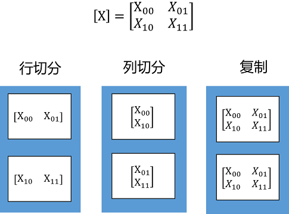
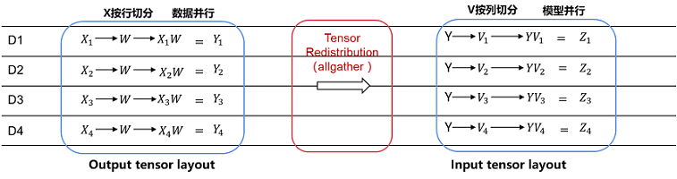

算子级并行

概述
随着深度学习的发展，网络模型正变得越来越大，如NLP领域已出现万亿级参数量的模型，模型容量远超单个设备的内存容量，导致单卡或数据并行均无法进行训练。算子级并行是通过将网络模型中每个算子涉及到的张量进行切分，降低单个设备的内存消耗，从而使大模型的训练成为可能。
基本原理
MindSpore对每个算子独立建模，用户可以设置正向网络中每个算子的切分策略（对于未设置的算子，默认按数据并行进行切分）。
在构图阶段，框架将遍历正向图，根据算子的切分策略对每个算子及其输入张量进行切分建模，使得该算子的计算逻辑在切分前后保持数学等价。框架内部使用Tensor Layout来表达输入输出张量在集群中的分布状态，Tensor Layout中包含了张量和设备间的映射关系，用户无需感知模型各切片在集群中如何分布，框架将自动调度分配。框架还将遍历相邻算子间张量的Tensor Layout，如果前一个算子输出张量作为下一个算子的输入张量，且前一个算子输出张量的Tensor Layout与下一个算子输入张量的Tensor Layout不同，则需要在两个算子之间进行张量重排布（Tensor Redistribution）。对于训练网络来说，框架处理完正向算子的分布式切分之后，依靠框架的自动微分能力，即能自动完成反向算子的分布式切分。
Tensor Layout用于描述Tensor在集群中的分布信息，Tensor可以按某些维度切分到集群，也可以在集群上复制。下面这个例子中，将一个二维矩阵切分到两个节点，有三种切分方式：行切分、列切分及复制（每种切分方式即对应于一种Tensor Layout），如下图所示：

如果将二维矩阵切分到4个节点，则有四种切分方式，行列同时切分、复制、行切分+复制、列切分+复制，如下图所示：

Tensor Redistribution用于处理不同Tensor Layout之间的转换，它能在集群中将Tensor从一种排布转换成另外一种排布。所有重排布操作，都会被分解成“集合通信+split+concat”等算子组合。下面两张图说明了几种Tensor Redistribution的操作。

图：Tensor切分到两个节点的重排
 图：Tensor切分到四个节点的重排
图：Tensor切分到四个节点的重排
用户可以使用shard()接口来设置算子的切分策略，该接口可以描述算子的每个输入张量的每个维度如何切分。比如MatMul.shard(((a, b), (b, c)))表示MatMul有两个输入张量，对第一个输入张量的行均匀切分a份，列均匀切分b份；对第二个输入张量的行均匀切分b份，列均匀切分a份。
import mindspore.nn as nn
from mindspore import ops
import mindspore as ms
ms.set_auto_parallel_context(parallel_mode="semi_auto_parallel", device_num=4)
class DenseMatMulNet(nn.Cell):
def __init__(self):
super(DenseMatMulNet, self).__init__()
self.matmul1 = ops.MatMul.shard(((4, 1), (1, 1)))
self.matmul2 = ops.MatMul.shard(((1, 1), (1, 4)))
def construct(self, x, w, v):
y = self.matmul1(x, w)
z = self.matmul2(y, v)
return z
在以上例子中，用户在4个卡上计算两个连续的二维矩阵乘：Z = (X * W) * V 。第一个矩阵乘Y = X * W，用户想把X按行切4份（即数据并行）；而第二个矩阵乘Z = Y * V，用户想把V按列切4份（即模型并行）：
由于第一个算子输出的Tensor Layout是第零维切分到集群，而第二个算子要求第一个输入Tensor在集群上复制。所以在图编译阶段，会自动识别两个算子输出/输入之间Tensor Layout的不同，从而自动推导出Tensor重排布的算法。而这个例子所需要的Tensor重排布是一个AllGather算子（注：MindSpore的AllGather算子会自动把多个输入Tensor在第零维进行合并）

特殊说明
在算子级并行中，为满足不同场景诉求，部分算子能通过add_prim_attr()接口对其分布式实现进行配置，这些配置仅对SEMI_AUTO_PARALLEL与AUTO_PARALLEL模式适用：
Gather算子：add_prim_attr(“manual_split”, split_tuple)。该接口配置Gather算子的第一个输入非均匀切分，它仅对axis=0时有效。其中
split_tuple是一个元素为int类型的元组，元素之和须等于Gather算子第一个输入的第零维的长度，元组个数须等于Gather算子第一个输入的第零维切分份数。Gather算子：add_prim_attr(“primitive_target”, “CPU”)。该接口配置Gather算子在CPU上执行，用于异构场景。
操作实践
下面以Ascend单机8卡为例，进行算子级并行操作说明：
样例代码说明
下载完整的样例代码：operator_parallel。
目录结构如下：
└─sample_code
├─operator_parallel
│ rank_table_8pcs.json
│ train.py
│ run.sh
...
其中rank_table_8pcs.json是配置Ascend 8卡环境的组网信息文件，train.py文件是定义网络结构的脚本，run.sh是执行脚本。
配置分布式环境
分布式环境的配置可参考：配置分布式环境变量教程。
定义网络
from mindspore.nn import Cell
from mindspore.ops import operations as ops
import mindspore as ms
from mindspore.common.initializer import initializer
class Net(Cell):
def __init__(self):
super().__init__()
self.matmul = ops.MatMul().shard(((2, 4), (4, 1)))
self.weight = ms.Parameter(initializer("normal", [32, 16]), "w1")
self.relu = ops.ReLU().shard(((8, 1),))
def construct(self, x):
out = self.matmul(x, self.weight)
out = self.relu(out)
return out
以上网络有两个算子，MatMul和ReLU。
其中对MatMul的切分策略为：第一个输入的行切分2份，列切分4份；第二个输入的行切分4份，列不切分。对ReLU的切分策略为：第一个输入的行切分8份，列不切分。
运行脚本
利用样例代码，可以用以下命令运行8卡的算子级并行训练脚本：
sh run.sh 8
执行后，可以从device0对应的日志文件中，看到以下结果：
epoch: 1 step:1, loss is 23.02248764038086
epoch: 1 step:2, loss is 23.00420570373535
epoch: 1 step:3, loss is 22.97960090637207
epoch: 1 step:4, loss is 22.96306419372558